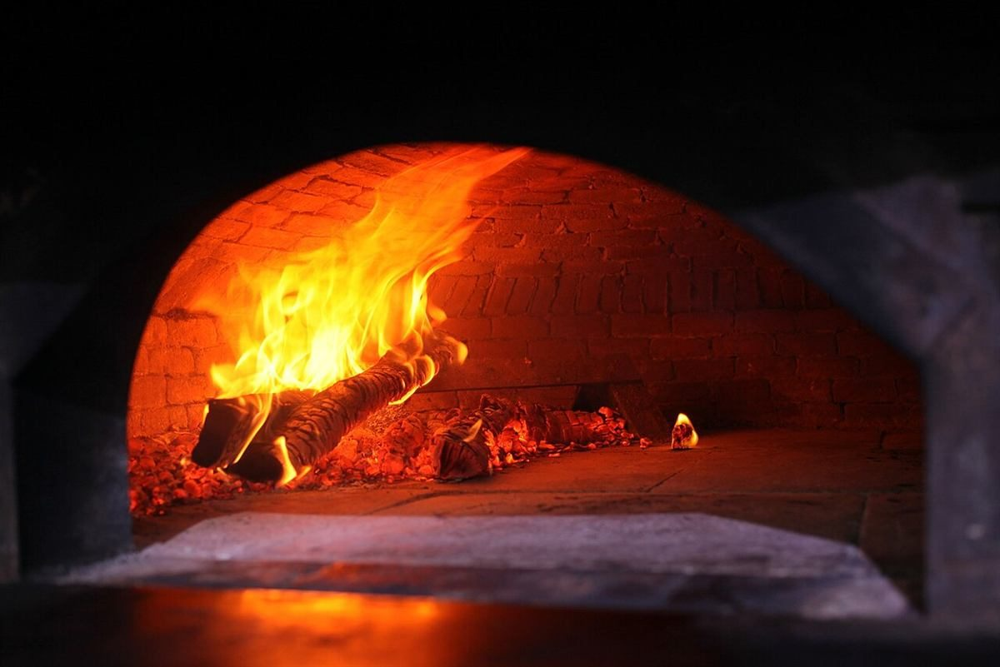
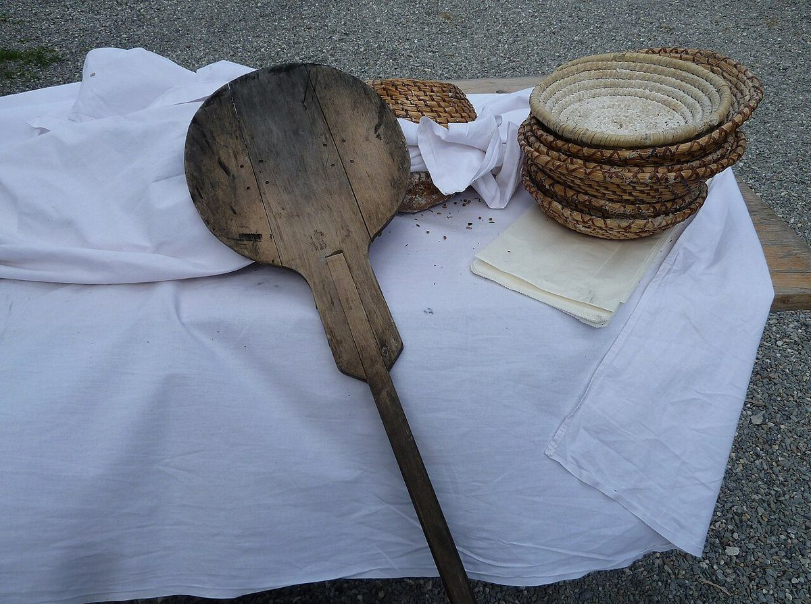

パン屋 / 和歌山県和歌山市
COBATOBAKE FACTORY
和歌山県和歌山市のパン屋「COBATO BAKE FACTORY」のご案内ページです。営業時間やメニューなど、詳しいことは準備中。まずはInstagramをのぞいてみてください。

三色灯の稼働表
制作側の連想
「BAKE FACTORY」から、三色灯を思いついた
店名の由来は分かりません。制作側は「FACTORY」という言葉から、工場の機械の上についている三色の表示灯(緑・黄・赤)を連想しました。そこでこのサイトは、情報の状態を三色で示す「稼働表」の作りにしています。お店の理念や由来とは無関係な、制作側の連想です。
稼働表
この試作ページの三つの灯り
- 緑:確認できたこと所在地、電話番号、Instagramのアカウント。
- 黄:準備中営業時間、定休日、メニュー、価格、ご予約、駐車場。確認でき次第お知らせします。
- 赤:断定しないことお店で扱っている商品や、お店の様子についての推測は、事実として書きません。
パンができるまで(一般的なイメージ)
粉から焼き上がりまで、四つの写真。
写真は国外・撮影地不明のフリー素材で、お店の工程や商品ではありません。
- 01 粉

粉(イメージ) - 02 生地

生地(イメージ) - 03 窯入れ

窯入れの道具(イメージ) - 04 焼き上がり

焼き上がり(イメージ)
ご案内
お店のこと(確認できたものだけ)
| 所在地 | 〒640-8111 和歌山県和歌山市新通５丁目３６ |
|---|---|
| 電話 | 073-488-9770 |
| SNS | Instagram @cobato_bake_factory |
| 営業時間 | 準備中 |
| 定休日 | 準備中 |
| ご予約 | 準備中 |
| 駐車場 | 準備中 |